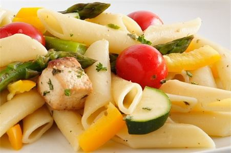

Food with Passion is focused on providing incomparable wholesome food to all their customers. Fresh, quality, and healthy/wholesome food are important guidelines that we stand by. Our customer satisfaction is guaranteed! We aim to please and our goal is to meet your expectations.
With a variety of offerings to choose from, we’re sure you will be happy working with us. We look forward to working with you and strive to handle all of your cooking and catering needs.
If you have any comments, suggestions or questions, please feel free to contact us.
